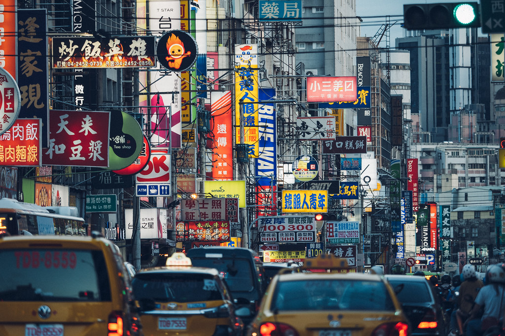
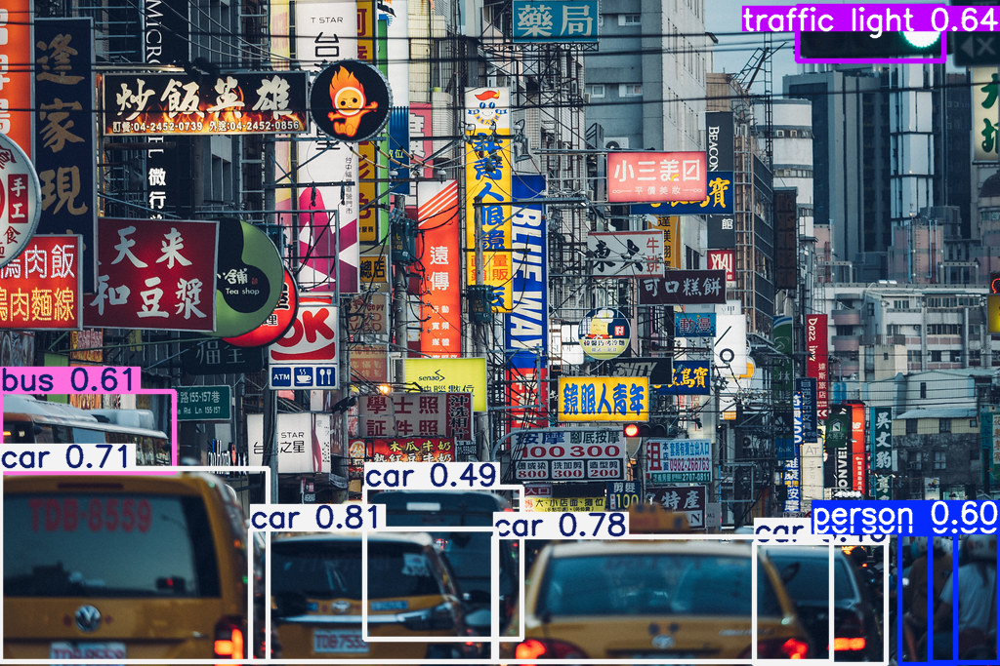
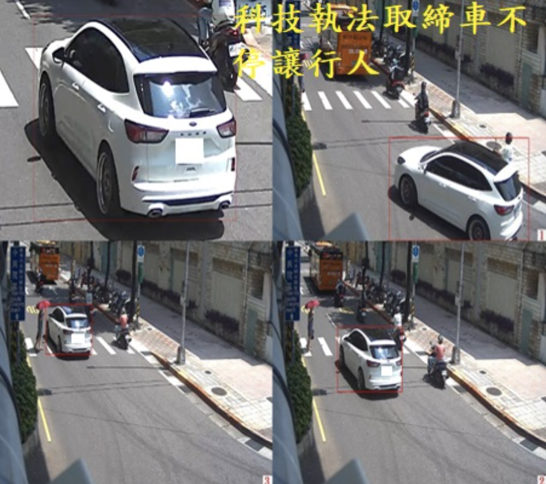

畫面切割
在使用者上傳的照片上套用虛擬網格，將整張影像切成 S × S 的小格子。
深度學習演算法期末主題探究
請向下捲動瀏覽
在使用者上傳的照片上套用虛擬網格，將整張影像切成 S × S 的小格子。

實際上傳街景圖
判斷格子裡有無某物體的中心點，若有則該網格就會負責處理該物件。
多個網格同時圈到同物件時，自動刪除重複、信心度太低的框，只留下最精準的結果。
YOLO判斷完成後會輸出已匡選出多個物件的照片，並標示該物件屬於何種類型（例如：人類、車、紅綠燈）

街景圖經YOLO判斷後的結果
| 應用領域 | 核心技術優勢 | 具體實務情境 |
|---|---|---|
| 1. 智慧交通與自動駕駛 | 自駕車行駛不容一毫秒延遲，需 YOLO 零延遲的一階段即時感知能力 | 物件偵測（行人/車輛）、交通號誌與標線辨識、路口科技執法與車牌追蹤 |
| 2. 工廠自動化與智慧製造 | 代替人類進行全天候、高疲勞度的自動光學檢查 | 生產線產品瑕疵檢測、物料自動計數分類 |
| 3. 安防監控與人流分析 | 賦予傳統錄影監視器即時識別與主動應變的能力 | 百貨人流即時計數、禁區的電子圍籬即時警報 |
| 4. 機器人與無人機技術 | 讓邊緣行動設備在移動時，能即時掌握周遭物理環境 | 掃地機器人繞障礙物、無人機高空巡檢 |
| 5. 醫療影像輔助診斷 | 篩檢大量靜態高解析度影像，一秒圈出病灶以減輕醫生負擔 | 輔助放射科快速圈選 X 光片、電腦斷層（CT）或 MRI 中的疑似腫瘤與骨折 |
| 6. 零售與日常生活 | 將深度學習無縫融入生鮮購物、消費與休閒娛樂場景中 | 無人商店（Amazon Go）拿了就走的自動結帳、球場球員跑動軌跡追蹤。 |
YOLO就像是一個視覺敏銳的絕世高手，照片一亮出來，他眼睛看一眼，就能同時把你照片裡所有的貓、狗、車子、路人全部用框框精準抓出來，而且還能順便叫出它們的名字！
以下是YOLO處理一張照片時的4個核心步驟：
1. 劃分網格：
當你把一張照片輸入給 YOLO 時，它做的第一件事就是把整張照片切成S × S 的網格。物體的中心點落在哪個格子，那格就要負責處理這個物體。2. 同時預測：
每個格子會預測出固定數量的框，每個框都有信心分數，代表格子有多確定這裡有東西。預測類別機率：這個格子會猜：「如果這裡真的有東西，它是貓、是狗、還是汽車的機率各是多少？」，這些資訊是整張照片經過一次卷積神經網路（CNN）後，同時產生成一個巨大的矩陣。3. 篩選「有感的」候選匡：
計算後畫面上會出現成百上千個框，YOLO 會把「信心分數」乘以「類別機率」，得到一個綜合分數。如果分數太低，表示這大概只是背景或雜訊，YOLO 就會直接把這個框丟掉。4. 解決多餘的框：
同一個物體可能會被好幾個格子認領，YOLO 會使用 NMS算法：找出畫面上分數最高的那個框，算其他重疊的框和這個最高分框的重疊面積比例。如果重疊比例太高，就把分數低、重複的框直接消去。重複這個動作，直到每個物體都只剩下最準確的框。1. 速度快到不可思議：這是 YOLO 最強的護城河。因為它把物件偵測當成單一的「迴歸問題」來處理，照片丟進去、矩陣算一次就出結果了。
💡 這意味著： 它不僅能看照片，還能毫無延遲地看即時高畫質影片。
2. 具有「大局觀」（Global Context）： 傳統方法在看照片時，因為是局部切片檢查，常常會「見樹不見林」。但 YOLO 在預測時會把背景資訊一起算進去，因此這讓它的背景誤判率（False Positives）比傳統方法低了一半以上。
3. 超強的泛化能力（Generalization）： 泛化能力簡單來說就是「舉一反三」的能力。如果用自然照片訓練 YOLO，當你突然丟給它一張「藝術畫作」或「線條塗鴉」時，YOLO 依然能非常精準地抓出裡面的物體。這讓它在跨領域應用時，適應速度非常快。
傳統二階段演算法：
會先找位置在任東西，處理一張照片需要耗費較多時間，無法做到真正的即時影片辨識，但精準度極高，因為它對每個疑似物體的區域都反覆雕琢，所以對微小物體或密集重疊的物體抓得比較準。YOLO 單階段演算法：
由於結構精簡，矩陣算一次就出結果，運作速度快到不可思議，但對小物件或黏在一起的物體比較容易漏抓。傳統 YOLO 確實在這一步會卡關。雖然它在神經網路裡算矩陣是一階段（One-stage）極速完成，但當成千上萬個框噴出來後，電腦必須動用 CPU 去執行 NMS（非極大值抑制）演算法，一行行肉眼比對重疊面積、去刪除重複的框。這在即時自駕車需要每秒處理數十幀畫面時，確實會造成嚴重的「後處理運作延遲」。
YOLO 因為具備「神速」與「高準確度」這兩大核心優勢，在實際生活和各行各業中的應用範圍超級廣泛。只要是需要「即時看懂畫面」的場景，幾乎都是 YOLO 的天下。以下為你盤點幾個 YOLO 最經典也最常見的實際應用：
自動駕駛車在路上跑時，一毫秒的延遲都可能造成危險，因此需要 YOLO 這種能即時反應的演算法。
1.物件偵測： 即時框出路上的行人、腳踏車、機車、其他汽車。
2.交通通號誌辨識： 自動辨識前方的紅綠燈變換、速限標誌或地上的標線。
3.科技執法： 裝在路口的監視器可以用 YOLO 自動偵測違規停車、機車未戴安全帽，或是追蹤車牌。
在產線上，人類的眼睛看久了會疲勞，但 YOLO 不會，它常被用來當作 AOI（自動光學檢查） 的核心。
1.瑕疵檢測： 檢查剛出廠的電路板（PCB）上有沒有線路斷裂、電容焊錯，或是檢查皮革、布料上有沒有刮痕。
2.物料計數與分類： 自動數出輸送帶上有幾個零件，或是辨識水果的尺寸並進行自動分級。
3.智慧廚房/食品安全： 甚至能用來監測烘焙機裡的食物，像是即時辨識吐司的烘烤焦度（Doneness），一烤到完美的金黃色就自動停機，防止烤焦。
傳統的監視器只會錄影，現在加上 YOLO 之後就有了大腦。
1.人流與車流計數： 百貨公司或展覽場用來計算進出人數、分析熱門區域；各路段用來統計車流量以調整紅綠燈秒數。
2.電子圍籬（禁區警報）： 監視器畫面中設定一個虛擬框框，一旦 YOLO 偵測到有「人」在半夜爬過圍牆，立刻發出警報。
機器人要移動，就必須知道周遭環境長怎樣。
1.避障小車 / 掃地機器人： 透過鏡頭搭配 YOLO，即時辨識前方是牆壁、拖鞋還是寵物的便便，並在幾毫秒內做出轉彎迴避的決策。
2.無人機巡檢： 讓無人機飛上高空，自動辨識高壓電塔有沒有損壞、農作物有沒有生病，或是進行森林火災的煙霧偵測。
雖然 YOLO 常用在動態影片，但它對靜態影像的快速篩選能力也很受醫療界青睞。
1.腫瘤與病灶偵測： 在成千上萬張的 X 光片、電腦斷層（CT）或 MRI 影像中，YOLO 可以幫醫生「一秒圈出」疑似腫瘤、器官病變或骨折的位置，當作第一線的初步篩檢，大幅減輕醫生的負擔。
無人商店（如 Amazon Go）： 透過天花板密密麻麻的鏡頭，YOLO 可以追蹤顧客拿了什麼商品、放回什麼商品，實現拿了就走的自動結帳。
運動分析： 辨識球場上的球員和球（例如籃球、足球），即時追蹤球員的跑動軌跡或投籃姿勢。
總結 簡單來說，只要你想開發一個項目，裡面需要「讓電腦透過鏡頭，即時抓出畫面上某個東西的位置並叫出名字」，不管是路上的車、工廠的瑕疵、還是烤箱裡的吐司，YOLO 都會是工程師第一個想到的萬用工具！為了適應嵌入式設備或車載晶片，YOLO 家族特別衍生出了 輕量化版本（例如：YOLO-nano, YOLO-tiny）。技術上它會透過 模型剪枝（Pruning） 砍掉不重要的通道，並使用 量化技術（Quantization） 將原本 32 位的浮點數矩陣（FP32）壓縮成 8 位整數（INT8）。這樣做雖然會犧牲極微幅的精準度，但能讓記憶體消耗暴跌 75% 以上，讓輕量化硬體也能無壓力實現每秒數十幀（FPS）的即時感知！
這問到了深度學習最核心的靈魂！YOLO 預測框的準確度，是透過一組複雜的 「損失函數 (Loss Function)」 來計算並反向傳播修正的。它主要包含三大核心指標：
一、物件定位損失 (IoU Loss)：
現代 YOLO 不只看坐標的絕對誤差，而是採用 CIoU (Complete IoU) 或 GIoU。它會去計算「預測框」與「真實答案框」的重疊面積比率（IoU），並把兩個框的中心點距離、長寬比的對齊度全部當成懲罰項算進公式裡，逼模型越框越精準。二、置信度損失 (Confidence Loss)：
判斷格子內到底有沒有物體，算的是二元交叉熵（Binary Cross-Entropy）。三、分類損失 (Classification Loss)：
當確定有物體時，計算它到底是車子還是行人的機率誤差。這是透過神經網路中非常精妙的 「特徵金字塔網路 (Feature Pyramid Network)」 機制來搞定的。 當照片經過 Backbone 卷積時，淺層的神經網路解析度高，保留了非常精細的「幾何邊緣與位置資訊」，適合抓小物件；而深層的神經網路經過多次下採樣，解析度低，但具備強大的「高層次語義資訊（例如看懂這是一台大卡車）」。 現代 YOLO 透過 Neck 層的 PANet（路徑聚合網路） 結構，進行了自上而下與自下而下的雙向融合。它把深層的語義與淺層的精細邊緣強行串聯（Concat）在一起。這樣一來，檢測頭在輸出時，就能同時擁有大局觀與微觀細節，完美實現多尺度物件同步偵測。
質疑點：AI提到「YOLO一階段演算法為了追求速度，在精準度上往往比傳統二階段演算法差」。
反思：如果 YOLO 的精準度不夠高，而自駕車卻需要在複雜的道路上即時辨識障礙物，且例子中有提到不能有一毫秒的錯誤，誤判可能會造成嚴重車禍，那為何自駕車是利用YOLO？
【資料來源與文獻】
最新版本的YOLO26解決了背景雜訊主導梯度的問題，提升了對遠處微小目標（如遠方行人）的辨識精準度，證明了一階段演算法在應對複雜路況時的精準度。
證實YOLO在「日常生活與一般物件辨識」上精準度高居世界頂尖，現代YOLO模型的平均精準度也逐年增加，甚至超越了傳統二階段演算法。
KITTI 提供數萬張德國街景的車載相機與雷達資料，全世界的自駕感知模型都進行即時偵測競賽。在 2D/3D 物件偵測排行榜上，YOLO改良的自駕車模型名列前茅，證明了YOLO在真實道路環境的可行性。
【自駕車實際應用與文獻來源】
在毫秒延遲內預判行人和腳踏車的移動軌跡、相對速度，提供系統做出緊急煞車決策。
並行處理多顆車載鏡頭畫面，將2D影像即時融合成3D鳥瞰圖矩陣，解決側面與後方車輛的偵測盲點。
整合熱成像或紅外線感測影像，在完全沒有路燈的漆黑或大雨環境下，依然能精準圈選道路邊界與潛在野生動物。
利用多任務一階段網路，在偵測物件的同時精準捕捉車道線與可通行區域，維持穩定行駛。
原有的技術局限：經查證AI所說的精準度落後，只適用最一開始的YOLO（2015年初代YOLOv1），當時對小物件（如遠處行人）容易漏判。
修正後的正確理解：現代YOLO引入了「無錨框機制（Anchor-free）」與新型特徵提取網路，精準度已追平甚至超越傳統二階段演算法。自駕車需要的是極速且精準的一階段演算法，因為二階段演算法會帶來嚴重的畫面延遲，在時速破百的行車環境下反而更危險。而由上述Tesla、Waymo等實例即可得知現在的YOLO已經可以安全且精準的運用在自駕車上。
使用者上傳一張欲辨識的照片（或開啟即時自駕鏡頭），並點擊開始辨識
YOLO 接收到照片後，在後台第一時間執行 Resize（重新調整尺寸），將圖片無損縮放至網路規範大小，並進行歸一化
網頁前端介面會顯示「AI 分析中...」，此時前端會將打包好的影像矩陣以 API 形式送入神經網路
影像進入 YOLO 核心神經網路，通過由多層卷積組成的主干網路（Backbone），提取圖片中的邊緣、顏色、形狀等高維度幾何特徵矩陣
因為 YOLO 具一階段運作優勢，使用者在前端幾乎感受不到延遲，系統以每秒數百幀的速度在後台計算
透過特徵金字塔將不同大小的特徵圖進行融合，Head 預測端會在全景影像矩陣中，利用一階段迴歸預測所有車輛與行人的邊框位置和類別機率
前端網頁接收到 AI 回傳的 JSON 數據，瞬間將彩色的「預測邊匡」與「類別標籤」覆蓋在原本的照片上
採用端到端機制，在輸出前刪除多餘的框，把最精準的感知數據回傳給網頁前端
在台灣各縣市已全面上市並24小時運作的「科技執法系統」，便是YOLO即時物件偵測演算法的實際應用。架設在路間的警用高畫質監視鏡頭，必須在毫秒級的極低延遲內捕捉並圈選數十輛行進中的汽機車與行人。透過一階段迴歸運算，系統能瞬間判定車輛是否有闖紅燈、違規轉彎或未禮讓行人等違規行為。
台灣智慧交通兩大核心應用面向：
系統利用一階段演算法即時偵測路口所有動態物件。只要演算法判定車輛軌跡觸犯違規行為，系統會在毫秒內鎖定該車輛邊框並將車牌區域裁切，送往後台的OCR文字辨識系統進行製單執法，這項科技大幅降低警力巡邏的負擔與危險性。
參考連結：內政部警政署 全台科技執法宣導專區

科技執法示意圖（截自內政部警政署全球資訊網）
台灣近年推動的智慧交控，不再採用傳統埋在路面下的感應線圈，而是改在路口架設影像感知器。透過即時物件偵測，演算法能準確計算出「東路口目前有 15 輛車在排隊、西路口僅有 2 輛車」，系統隨即在後台動態調整紅綠燈的綠燈秒數。這種依據車流密度即時動態應變的技術，能有效地紓解都市尖峰時刻的車流塞車問題。
總結：
臺灣街道上24小時偵測路口安全的「科技執法」及舒緩尖峰時刻塞車的「智慧交控」，YOLO演算法改變了我們的生活：一、提升用路人安全：在毫秒間抓出違規與潛在衝突，制裁了抱著僥倖心態違規的不良駕駛，迫使駕駛們培養禮讓行人的習慣，守護行人路權與生命安全。
二、緩解高峰時段塞車情形：透過智慧交控即時梳理塞車潮，減少通勤族在紅綠燈前的無謂等待，讓都市運作更有效率、更節能減碳。
三、降低警力不足的問題： AI分擔了高重複性、高疲勞度的全天候監控工作，讓警力與交通管理人員能專注於更高決策層面的公共服務。
這項實際應用也看出AI演算法不再只是冰冷的程式碼，而是能實際轉為讓現代社會更安全、更有序、也更便利的科技。在本次專題探究中，AI利用口語化的方式讓我輕易且快速的理解了YOLO，大幅降低了學習的門檻。然而我也深刻體會到AI 回答的局限性，若是一昧相信AI給的答案很可能會有理解上的錯誤。
AI最初列的「傳統演算法vs YOLO」表格只列出了最初版本的YOLO比較，也讓我誤以為YOLO只是速度快贏過傳統演算法，在其他功能上仍略遜一籌。但因為YOLO的這些缺點與AI告訴我的「自駕車應用」不符合，實際上查證後才發現改版後的YOLO已經修正這些缺點，且真的有許多應用於生活中的應用，甚至就在我們的日常生活中。這次經驗讓我意識到，將 AI 當作唯一的知識來源是危險的，AI的解答並非百分之百正確，它提供的資訊必須經過二次驗證以確保其正確性。
透過對最新 YOLO26 官方文獻的查證與AI的解說，我理解了YOLO 透過CIoU 損失函數將重疊面積、中心距離與長寬比納入矩陣計算，也理解了 PANet 特徵金字塔 如何雙向融合深淺層網路，讓 AI 同時具備遠近大小的多尺度感知。
這次研究最令我印象深刻的是原來YOLO早已深入我們的生活，應用在大街小巷中的「科技執法」、「智慧交控」及耳熟能詳的「自駕車」。這也讓我聯想到這學期在「計算機組織及微算機實驗」課程中實作的「Arduino 智慧自走車」，自走車靠紅外線與超音波感測行走，如果離開特定地圖的黑白線或封閉環境便會寸步難行。
但如果進行跨領域延伸，將YOLO一階段即時視覺的技術加到自走車上，車子便能不再受限於黑白線的軌道，而是能自主辨識前方障礙物、紅綠燈與行人軌跡。這也讓我發現原先以為高深難懂的「自駕車」，其實大致上就是「自走車的軀殼」加上「YOLO即時應變的技術」。